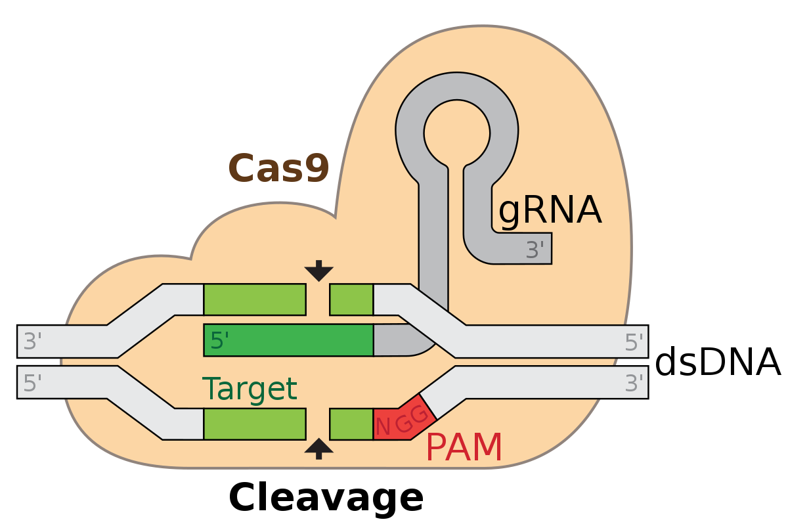
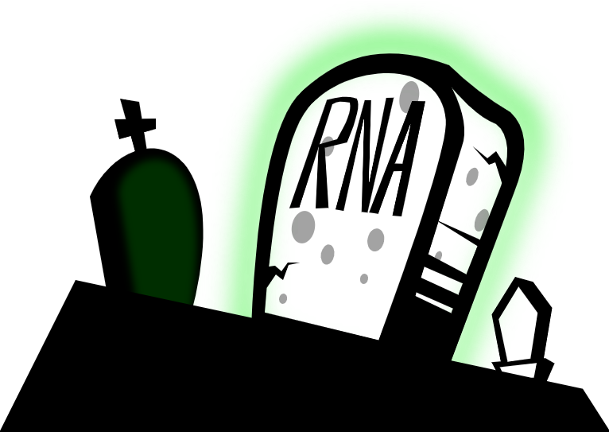

✁ Grow Up, Crisperly
People love messing with the things they like.
And if you want to
seriously mess with something,
what better way than
altering its DNA?
People who do this a lot - or at least often enough
to consider it their profession - call themselves
geneticists, and expect everyonelse to call
what they do
genetic engineering.
Now, most of the time, this 'engineering' results
from some fairly haphazard techniques - in fact,
you know that DNA even mutates randomly all on its
own (and that formed the basis of what you learned
about evolution).
"But,
what if ..." say these geneticists
to themselves, "what if we could make
precise and acurate alterations to DNA?
We could
really screw with things then!"
At this point, engineers typically
invent
something to do what they want - but in keeping
with geneticist's style, they decided to literally
just
stumble upon an enzyme that already does this.
Lucky for them, that happened!
Let's call that enzyme
Cas9.
More specifically, this enzyme has the ability
to unwrap strands of DNA, match a specific part,
and then cut the DNA at that exact location.
Combined with some other 'self-healing'
abilities of DNA, geneticsts developed a method
of making very precise genetic edits.
How precise? Well, you already know that DNA
essentially consists of a HUGE list of
letters;
matching pairs of G, A, T, & C, over and over again,
millions and millions of them, in a specific order,
known as a
sequence, that 'spells out' the
definition of an organism.
CRISPR-Cas9 would allow you to change
one letter
in an exact position, from that enormous sequence.

figurine 1: This map shows an enzyme named Pamela
looking for a Target near the parking structure
at the entrance to a mall.
The Cas9 enzyme - a sort-of molecular blob - has
a little piece of RNA (basically a short, one-sided,
piece of DNA) stuck inside it. That small sequence
of RNA
guides the enzyme to a matching,
complimentary,
target location in the full
DNA strand, where it then splices the DNA.
In nature, that guide comes from a previous
viral infection and has the effect in bacteria
of preventing repeat infections.
Geneticists discovered that if you
replace the little strand of guide-RNA with
one you have
designed yourself,
Cas9 will make its cut in the postion you want
instead.
Brilliant!
Except, ofcourse, that's not what happens;
why
would it be?
The process of matching complimentary portions
of the DNA sequence contains a LOT more sloppy
guessing than how you see it depicted in most
edutainment. Remember that DNA only has four
different letters to choose from; so out of the
billions of
base pairs in the sequence,
a lot of parts will look similar. If there were
only four notes, most songs would have parts
that sounded a lot like other songs.
Ultimately, Cas9 might end up landing a little
off-target, in some place that matches
the guide
enough, but not exactly.
The enzyme works, the RNA guide has the right
letters, in the correct order, the lab is the
right temperature and humidity, but the Cas9
attaches to places in the DNA where the sequence
only matches, say, eighty-five percent of the
guide.
Off-targets cause a few
severe problems,
maybe deactivation of vital genes, or even
cancerous mutations. So, obviously, geneticists
really want to avoid off-targets, right?
Wrong.
No, what they want to do is:
predict the
likelihood of it happening. Remember,
pretty liberal definition of the word 'engineer'
being used here.
An enzyme blob uses a little RNA tail
to cut DNA in precise locations,
but misses its target sometimes.
Geneticists want to know how likely
it is to miss.
How do they do this?
A few different ways, one of which is
not
the following method because, ofcourse,
this is supposed to be a description of a
new method of doing it.
Geneticists have developed a version of Cas9
that still binds to a precise location
but does not cut the strands of DNA.
This
dead Cas9 might also have a
green flourescing protein attached
to it. That way you can add Cas9
complexes to different samples and see them
under a special light.

Now, you probably did not know that these
enzymes gradually
deteriorate, over time,
in different ways. If a complex fails to bind to
a target site at all, it will dissipate into the
rest of the cell rather quickly. If a complex
does bind, it will still get destroyed
when the DNA replicates, but that takes longer
to happen. By measuring the amount of glow
coming from each sample, at different times,
you can get an idea of the
rate at which
the enzymes deteriorate and give yourself
a fairly good idea of your complex's affinity
for off-targets. But why?
Because there are more ways to be wrong than there are
to be right.
Remember, that Cas9 only has
one actual target.
All of the off-targets would create
excess binds
and, therefore, more glowing portions on the strand
of DNA.
From the graph you see that, initially, all samples had
high levels of flourescence because the Cas9+GFP had
just been added. The samples with high percentages of
off-targets continued to have high levels of flourescence
for longer while the most accurate sample dropped off quickly.
Ultimately, "our results confirm our dCas9-GFP assay as a
versatile approach to effectively evaluating off-targets
for any guide crRNA under functionally comparable conditions
prior [to] CRISPR gene editing."
References:
Capocchi, Joia. Interview. Conducted under duress
by Abraham Kazorovski, 5 September 2022.
Malik, Fakherddine, Nguyen, Wong, Suh, Cao, Sagi,
Boruta, Pham, et al. "Death needs a glow up."
Journal of Molecular Biology 99,
vol. 1, no. 1, August 2022, pp. 1‑25.